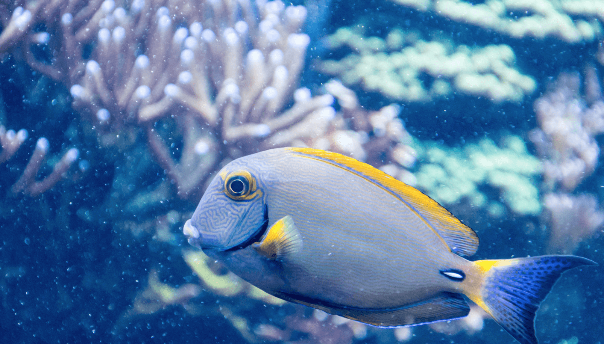

这篇文章上次修改于 661 天前，可能其部分内容已经发生变化，如有疑问可询问作者。

某些特殊情况下，我们拍摄的照片上会有许多连续的斑点污迹，比如对着玻璃或者纸张拍摄的图片。这时候可以简单的通过 Photoshop 插件来处理。

上图是水族箱里的一条鱼，可以看到图片里充斥着白色小斑点，可能是水里的漂浮物或者玻璃上的污垢。
首先复制图层，转换为智能图层，选择 filter - noise - dust & scratches：

首先将 radius 和 threshold 都拉到 0，然后选择到图片的高光地方，拖动 radius 使斑点刚好消失：
然后调节 threshold，使边缘尽量锐化还原细节，但注意调得过高会导致噪点出现：
完成后点击确认，图片干净了很多，但是鱼身有些模糊了，所以需要将鱼身排除在外。新建图层蒙版，将鱼的部分涂抹黑色：
可以看到在阴影部分，依然有部分污迹没有消除，我们再次复制原始图层，使用上面的方法来处理。
这次我们只考虑阴影部分，将 radius 调大，使阴影部分的污迹也消除：
完成后，按住 alt 键添加图层蒙版并反转为黑色，使用白色画笔将阴影部分在蒙版上涂抹出来：
这样背景上基本就很干净了，现在我们处理鱼身上的污迹，可以使用的方法有很多比如印章工具，修复画笔工具等，这里我们使用 content aware fill 来处理。
按快捷键 cmd alt shift E 盖印图层，然后使用套索工具选出污迹部分，注意按住 shift 键来添加选区：
选区完成后，点击 edit - content aware fill：
直接使用默认设置，点击确认，填充部分回放在一个新图层内，点击 cmd D 取消选区，可以看到鱼身上的污迹已经去除了：
最终效果如下：
没有评论